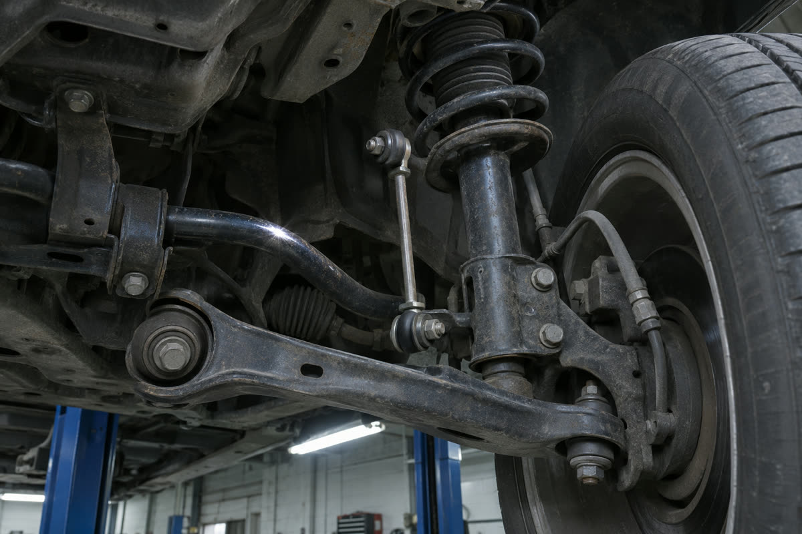
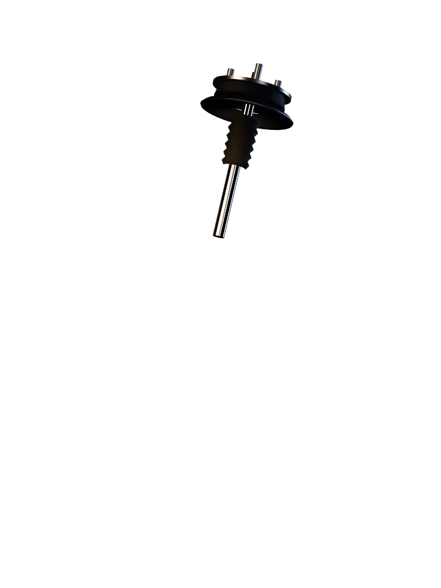
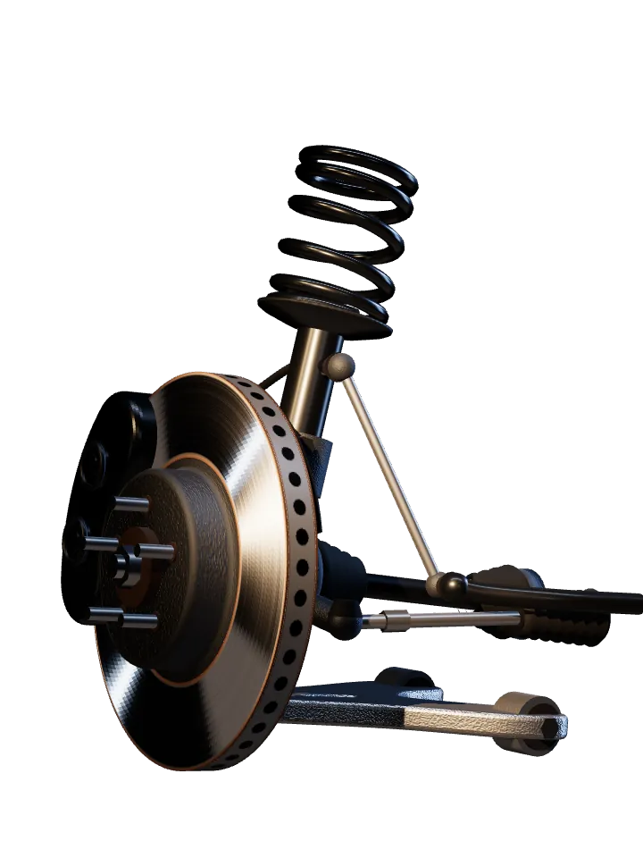
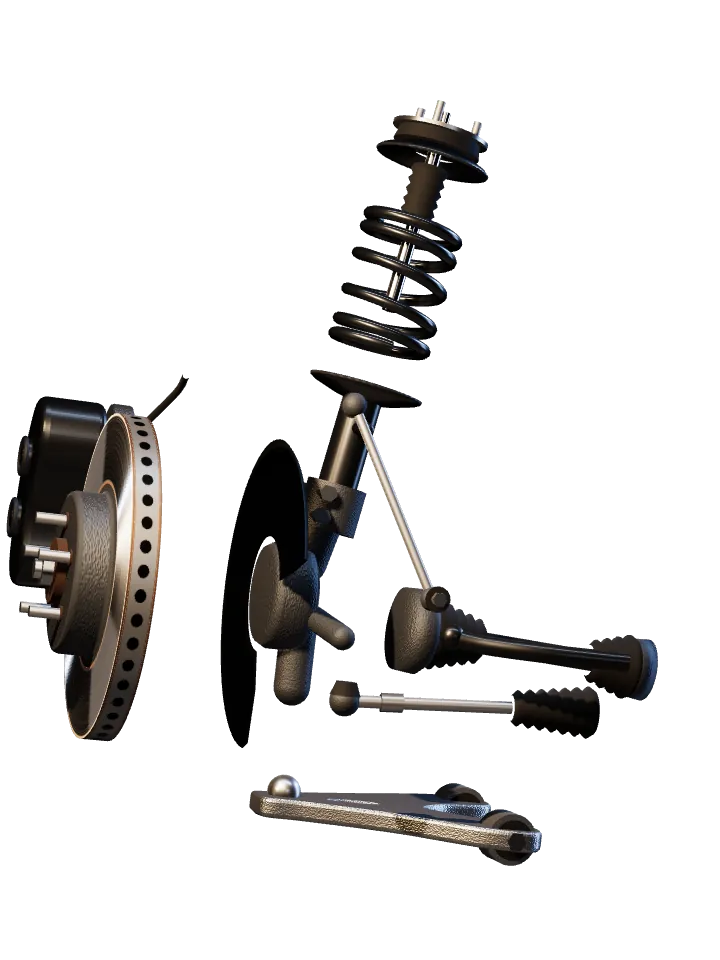
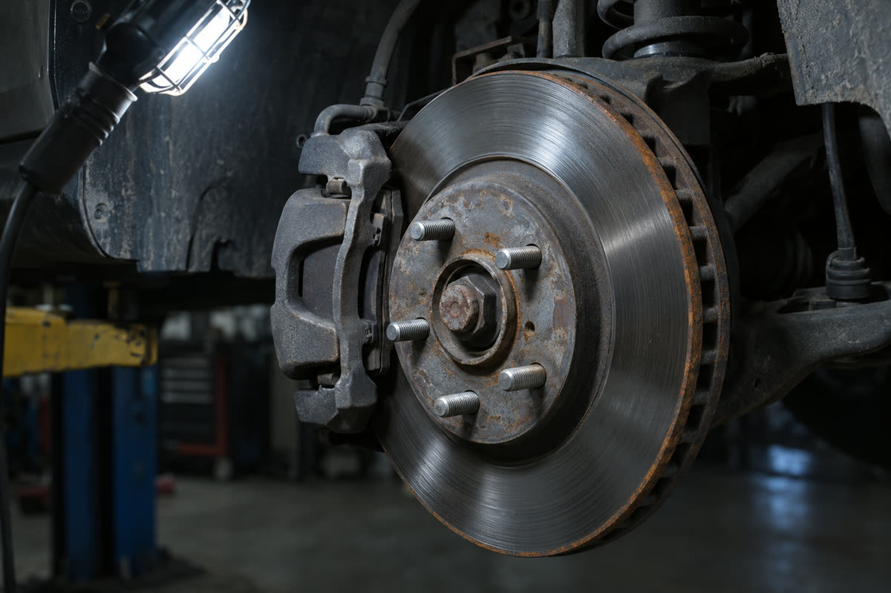
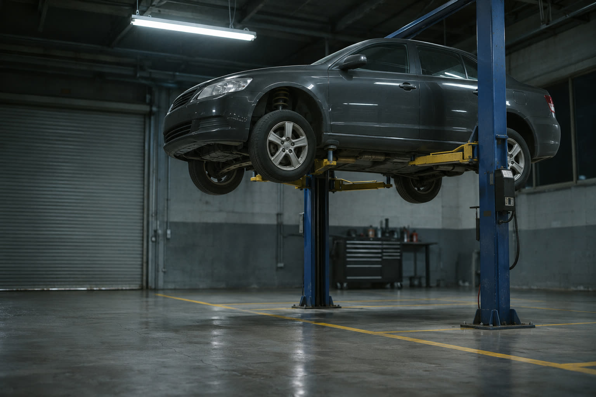

Діагностика ходової
500 ₴
тверда ціна за огляд ходової на підйомнику


3D-ілюстрація
Діагностика ходової — 500 ₴. Ремонтуємо лише після кошторису, який ви погодили.
Стукає на дрібних ямах
Глухий стук на дрібних нерівностях часто дають саме вони.
заміна — від 400 ₴Гумові шарніри важеля. Зношені шумлять на ямах.
Якщо авто ще й розгойдує на поворотах, дивляться їх.
Діагностика ходовоїціна умовна · робота без запчастин
500 ₴
Ремонт — лише після кошторису, який ви погодили.
Точну причину називає майстер після огляду. Це не діагноз, а те, з чого зазвичай починають.
Діагностика ходової · 500 ₴

Діагностика має тверду ціну. У роботи є «від»: суму саме для вашого авто ви бачите в кошторисі до початку ремонту.

Діагностика ходової
500 ₴
тверда ціна за огляд ходової на підйомнику
Ще дві перевірки
по 500 ₴
Далі — ремонт за кошторисом. Наприклад, заміна стійки стабілізаторавід 400 ₴

Заміна передніх гальмівних колодок
від 700 ₴
робота без запчастин
Заміна стійки стабілізатора
від 400 ₴
робота без запчастин
Розвал-сходження, одна вісь
від 900 ₴
регулювання після перевірки
Масло двигуна з фільтром
від 500 ₴
робота без запчастин
Шиномонтаж R16, 4 колеса
від 1 400 ₴
умовна ціна за комплект
Ціни умовні: орієнтир за публічними прайсами СТО Києва, Харкова й Запоріжжя, листопад 2026. Робота без запчастин. Перелік діагностики — за публічними описами на сайтах СТО.
Правило сервісу
Седан, 2014 приклад
10:05
Погодження кошторису
Кошторис чекає на вас
Люфт лівої стійки стабілізатора
Робота 400 ₴ і деталь
Поки ви не натиснули, машина стоїть на підйомнику.
Спершу показуємо несправність. На підйомнику, а не словами.
Кошторис пишемо до ремонту. Робота й деталі окремими рядками.
Старі деталі віддаємо вам. Видно, що саме замінили.
Приклад: журнал одного ремонту, дані вигадані. У справжньому СТО ці правила задає власник.
Звук замість пояснень
Бот у Telegram приймає голосове, питає марку, рік і пробіг і передає все майстрові.
0:07Голосове повідомлення, сім секунд
Отримав голосове. Яке авто, рік і пробіг?
Седан, 2014, 186 тис. км. Стукає спереду на дрібних ямах.
Записав. Передаю майстрові голосове й дані авто.
Приклад розмови з ботом. Це демо: нічого нікуди не надсилається.

Оберіть, що чуєте, додайте авто й рік. Майстер відповість у Telegram з вікном запису.
Адреси, телефону й годин роботи тут немає: СТО вигадане.
Стукає на дрібних ямахДіагностика ходової · ціна умовна
500 ₴
0:07
Приклад голосового: сім секунд стуку. У справжньому сайті ця кнопка відкриває бота в Telegram, і він сам питає марку, рік і пробіг.
Це демо — нічого не надсилається
Як заявка піде у справжньому сайті
Демо-форма концепту: дані не зберігаються і нікуди не надсилаються.